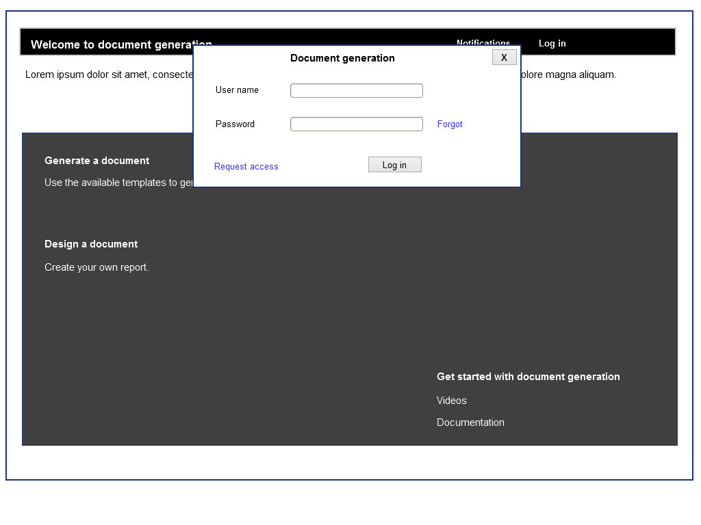
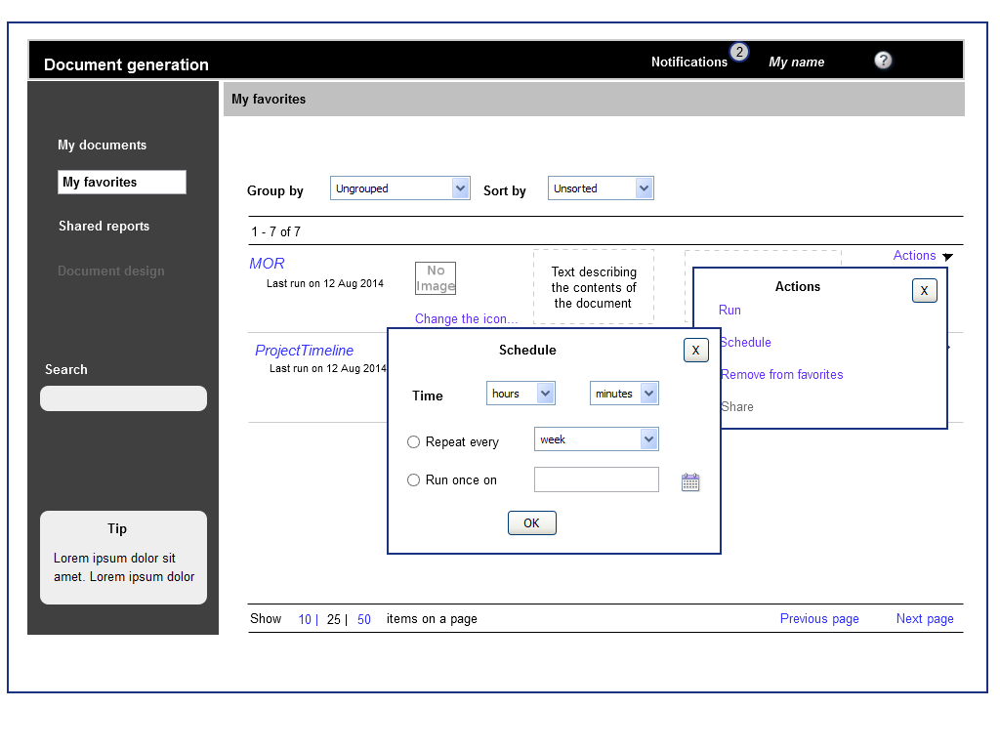
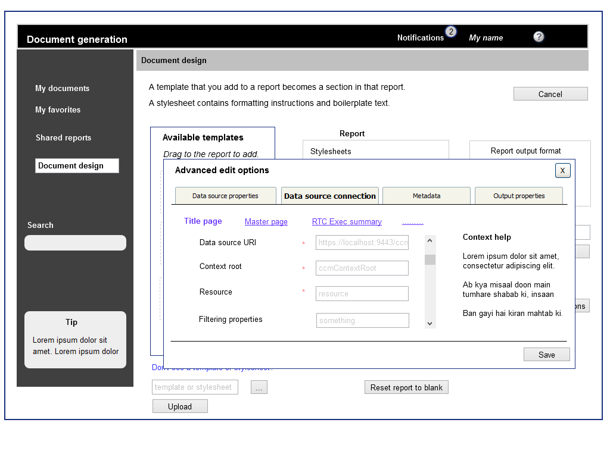
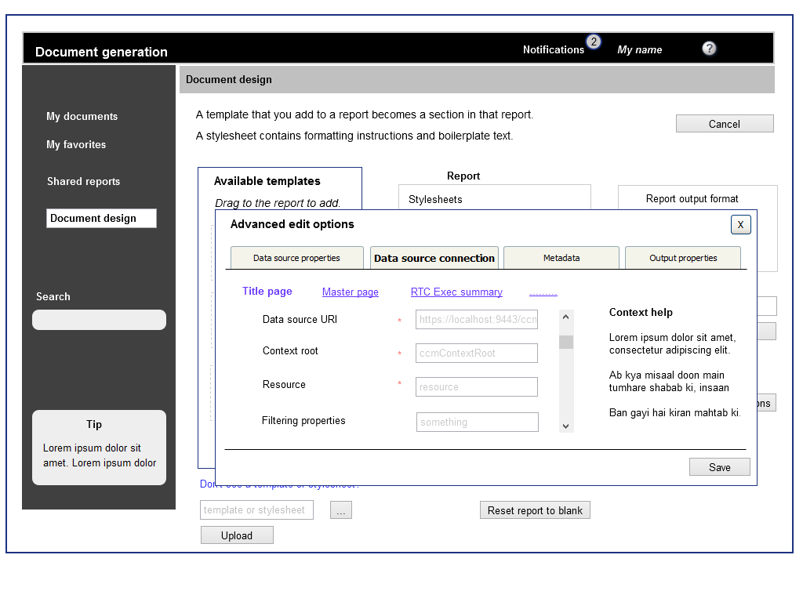

Wireframes: Report generation software
These are the wireframes for a report generation software. This enterprise-level software is for creating reports that contain data pulled from disparate sources. These data sources can either be documents themselves (in .doc, .pdf., or .xml formats) or be other documents created through this software. Parts (or sections) of a report can contain data from more than one source.
User analysis
The software is used by these two categories of people:
- Administrators: People who design the report templates and give access permissions thereto. Report templates do not change on a daily basis.
- Users: People who run report templates to generate the actual reports.
The software is used either on a desktop or on a laptop; it is not used on any handheld device.
Task analysis
Administrator tasks
- Design a report template from a one or more data sources
- Customise the properties of a report template after designing it
- Customise the properties of a report template while designing it
- Generate a report after creating its template
- Share a report template after creating it
User tasks
- Use templates to generate reports
- Tag, favourite, and share generated reports
- Schedule the generation of a report, and subscribe to notifications and updates
- Stop, restart, or cancel a report-generation task started by oneself, and for shared reports
Design goal
- An administrator task sould not take more than 7 clicks or 3 screens.
- A user task should not take more than 3 clicks.
Wireframes
Only a representative set is given on this page; not all of the wireframes for this project are included.
 


 
